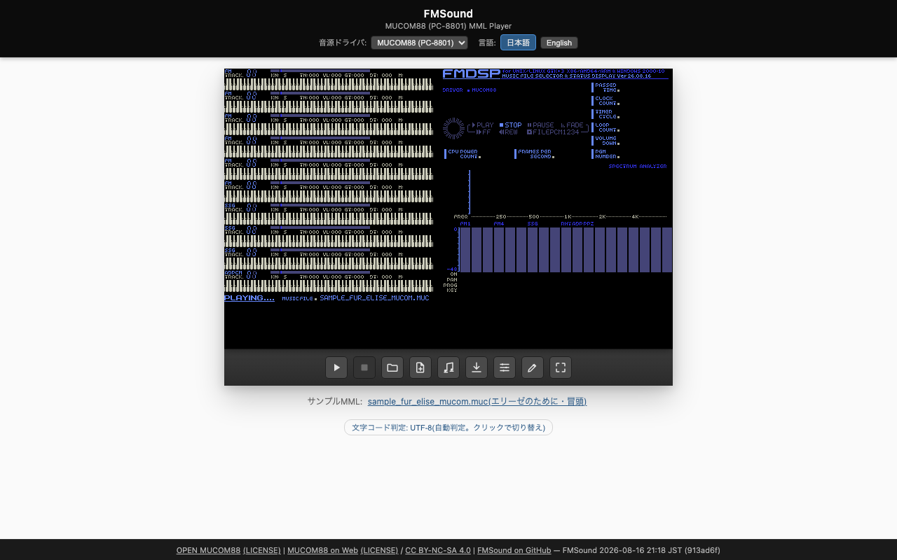
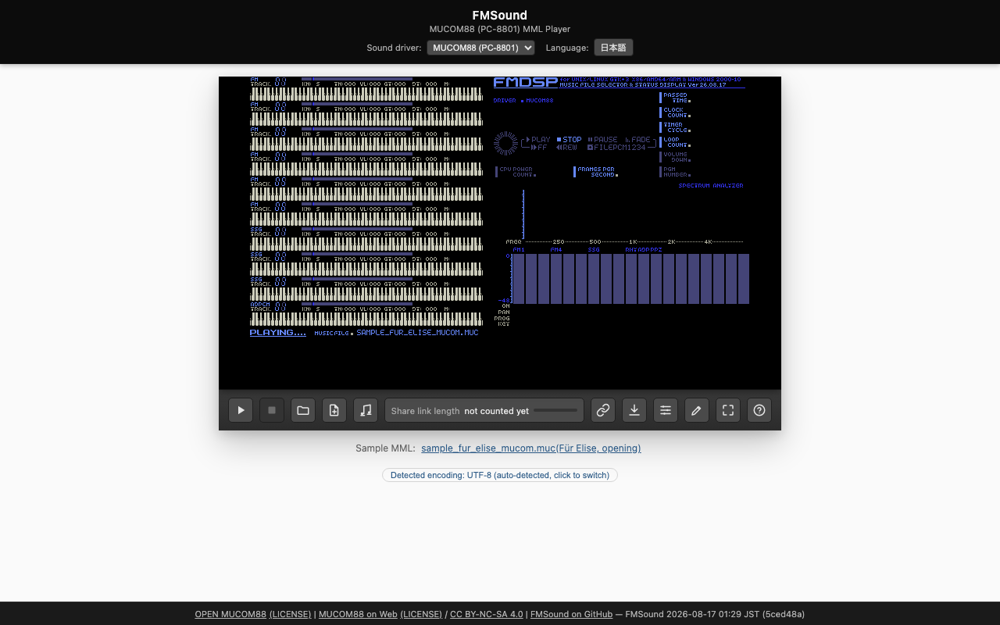
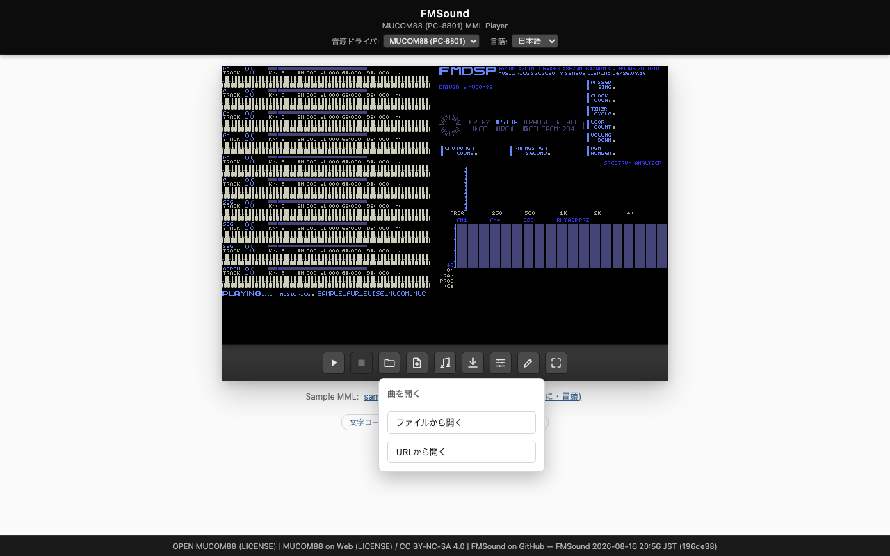
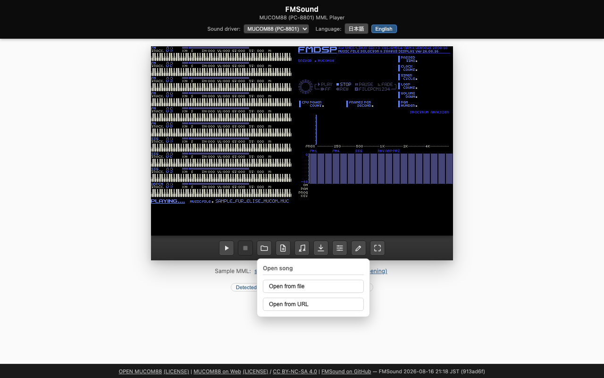
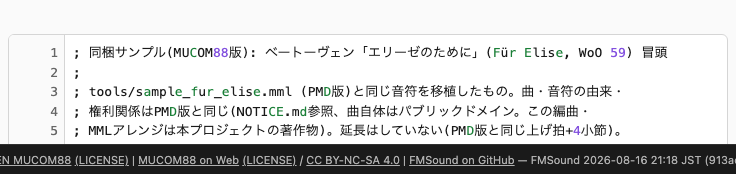
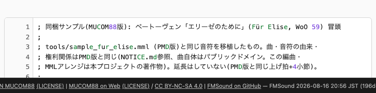
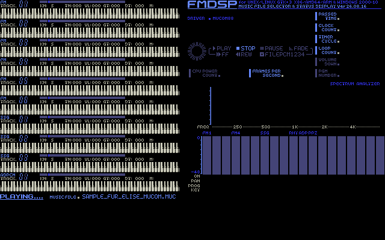
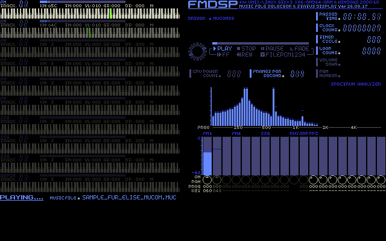
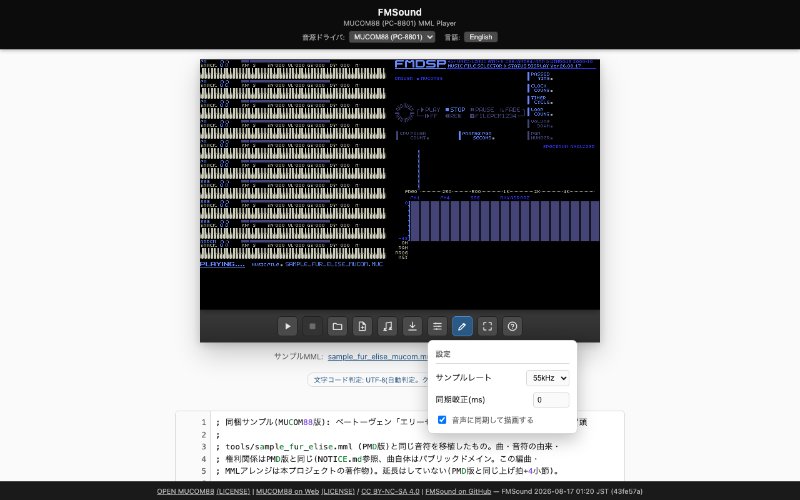
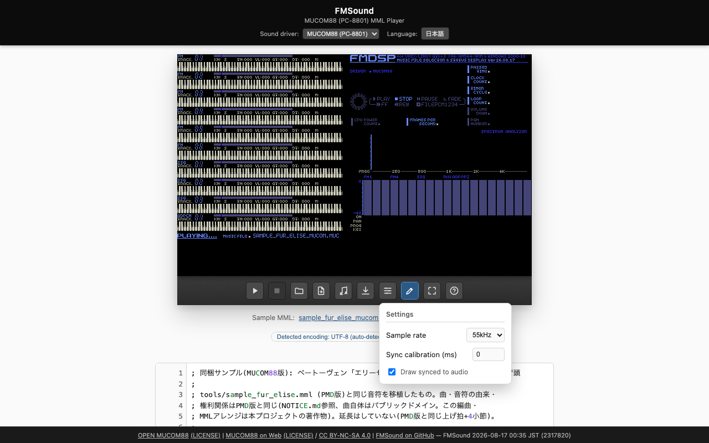

これは何か
FMSound は、PC-9801用FM音源ドライバ「PMD」とPC-8801用「MUCOM88」、2つのドライバのMMLをブラウザだけで演奏できるプレイヤー兼エディタです。ビルド済みのwasmと共通のWeb UIで動き、サーバーは不要です。
ただ音を鳴らすだけでなく、FMDSP風の画面でパートごとの演奏状態(音色・音程・ゲート・音量)をリアルタイムに描画します。スペクトラムアナライザとレベルメーターも実際のドライバの出力から動きます。

What this is
FMSound is a browser-only player and editor for MML played through two FM sound driver engines — PMD (PC-9801) and MUCOM88 (PC-8801). It runs on prebuilt wasm and a shared web UI; no server is required.
It doesn't just play sound — it draws a FMDSP-style screen that renders each part's playback state (voice, pitch, gate, volume) in real time. The spectrum analyzer and level meters are also driven live from the real driver's output.

すぐ試す
ページを開くと、既定で同梱サンプル(「エリーゼのために」冒頭)が読み込まれた状態になっています。ツールバーの再生ボタン(▶)を押すだけで音が出ます。
ヘッダーの「音源ドライバ」プルダウンで PMD (PC-9801) / MUCOM88 (PC-8801) を切り替えられます(?driver=pmd / ?driver=mucom のURLクエリでも指定可能)。
Try it right away
Opening the page loads a bundled sample by default (the opening of "Für Elise"). Just press the play button (▶) on the toolbar to hear it.
The "Sound driver" dropdown in the header switches between PMD (PC-9801) and MUCOM88 (PC-8801) (also selectable via the ?driver=pmd / ?driver=mucom URL query).
曲を開く
ツールバーの「曲を開く」アイコンから、「ファイルから開く」と「URLから開く」を選べます。
ファイルから開く
手元の .M/.m(PMD)、.muc(MUCOM88)ファイルを選ぶか、画面のどこにドラッグ&ドロップしても読み込めます。ZIP/LZHで固めた書庫を渡すと中身を展開して曲を選べます(書庫の中に .d88 ディスクイメージが入っている場合は、さらにその中も展開します)。書庫内に曲が複数あるときは一覧から選ぶ画面が出ます(URLから書庫を開いたときと同じ画面です)。
URLから開く
URLを入力して「実行」を押すと、そのURLの曲データ(または書庫)を取得して開きます。取得するだけで自動再生はしません(ブラウザの制約で音声再生にはユーザー操作が必要なため、読み込んだあとは再生ボタンを押してください)。
対応している配信元: GitHub(raw.githubusercontent.com)や jsDelivr(cdn.jsdelivr.net)のように、クロスオリジン取得(CORS)を許可しているホストは直接取得できます。Google Drive・Dropboxの共有リンクは、このサイトに中継サーバーが設定されている場合にのみ利用できます(中継サーバーが設定されていない場合はその旨のエラーになります)。OneDriveの共有リンクには対応していません。

Opening a song
The toolbar's "Open song" icon offers two choices: "Open from file" and "Open from URL".
Opening from a file
Pick a local .M/.m (PMD) or .muc (MUCOM88) file, or drag & drop it anywhere on the page. Pointing it at a ZIP/LZH archive extracts the contents so you can pick a song from inside (if the archive contains a .d88 disk image, that gets extracted too). If the archive holds more than one song, a picker appears (the same one you get when opening an archive from a URL).
Opening from a URL
Enter a URL and press "Go" to fetch and open the song data (or archive) at that URL. Fetching alone doesn't autoplay — browsers require a user gesture before audio can play, so press the play button after it loads.
Sources it supports: Hosts that allow cross-origin fetches (CORS), such as GitHub (raw.githubusercontent.com) and jsDelivr (cdn.jsdelivr.net), can be fetched directly. Google Drive and Dropbox share links only work when this site has a relay server configured (otherwise you'll get an error saying so). OneDrive share links are not supported.

曲ライブラリ
URLやドラッグ&ドロップで読み込んだ曲は、ブラウザの IndexedDB に自動で保存され、次回以降もツールバーの「曲ライブラリ」アイコンから開けます。.d88 ディスクイメージ単位で1つのアルバムとしてまとめられます(d88を含まない書庫は、書庫自体が1アルバムになります)。
保存はこの端末・このブラウザに閉じており、他の端末とは共有されません。プライベートブラウズ中など保存先が利用できない環境では、その旨が表示されます。
Song library
Songs loaded via URL or drag & drop are automatically saved to the browser's IndexedDB, so they stay available from the toolbar's "Song library" icon on later visits. Songs are grouped into one album per .d88 disk image (an archive without a d88 becomes one album by itself).
Storage is local to this device and browser; it isn't shared with other devices. If the storage isn't available (e.g. during private browsing), the library says so.
MMLを書く・コンパイルする
ツールバーの「エディタモードへ切替」ボタンで、MMLを直接書いて鳴らすモードに切り替えられます。行番号ガター付きのエディタで、構文ごとに色分け表示されます。
キーボードショートカット: ⌘/Ctrl+Enter でコンパイル&再生、Esc で停止。
「新規作成」ボタンで空(またはテンプレート)のMMLから書き始められます。編集内容は入力のたびにブラウザへ自動保存され、次回このページを開いたときに復元されます。

Writing and compiling MML
The toolbar's "Switch to editor mode" button switches to a mode where you write MML directly and play it. The editor has a line-number gutter and syntax highlighting.
Keyboard shortcuts: ⌘/Ctrl+Enter to compile & play, Esc to stop.
The "New" button starts you off with an empty (or template) MML. Your edits are saved to the browser automatically as you type, and restored the next time you open this page.

曲を共有する
ツールバーの「リンクをコピー」ボタン(鎖のアイコン)を押すと、いま編集中の曲そのものを含んだURLがクリップボードにコピーされます。どこにもアップロードしません。曲データはURLの#以降(フラグメント)に載せているだけで、フラグメントはブラウザがサーバーへ送らないため、GitHub Pagesのようなサーバーレスのホスティングのままで完結します。
ボタンの隣には、いまのリンクの文字数(例 2344 / 4000)とゲージが常に表示されます。打鍵のたびではなくコンパイル&再生のタイミングで集計し、編集中(未反映の変更がある間)は「未集計」と表示されます。共有ボタンを押した瞬間には必ず再集計されます。
上限は4,000字です。 超えるとボタンが無効化され、何字ぶん超えているかが表示されます。この上限がある理由は、Xなどが4,000字を超えるURLを通常のリンクとして扱わないためです(超えるとリンクとして扱われず、投稿の文字数を大きく消費してしまいます)。
受け取った側は、リンクを開くだけで曲が読み込まれます(同じタブのアドレスバーに貼り付けても読み込まれます)。共有できるのは曲(MMLテキスト)1本だけで、ディスクイメージは対象外です。
MUCOM88で、曲がディスク固有の外部音色バンクを使っている場合は、受け取った側で音色が変わります(共有時にUIが警告します)。詳しくは下記の「制約と注意」を参照してください。
Sharing a song
The toolbar's "Copy link" button (the chain icon) copies a URL that contains the song you're currently editing, right in the link itself. Nothing is uploaded anywhere. The song data lives in the URL's fragment (the part after #), and browsers never send the fragment to a server, so this stays fully compatible with serverless hosting like GitHub Pages.
Next to the button, a counter (e.g. 2344 / 4000) and a gauge always show the current link's length. It's recalculated at compile & play time rather than on every keystroke, and shows "pending" while there are unplayed edits. Pressing the share button always recalculates it first.
The limit is 4,000 characters. Going over disables the button and shows how many characters over you are. The reason for this limit: services like X don't treat a URL longer than 4,000 characters as a real link (past that, it's counted as plain text instead, eating deeply into the post's character budget).
Whoever receives the link just opens it and the song loads (pasting it into the same tab's address bar works too). Only a single song (the MML text) can be shared this way — disk images are not included.
For MUCOM88, if the song uses a disk-specific external voice bank, the recipient hears different voices (the UI warns about this when sharing). See "Limitations and caveats" below for details.
画面の見かた
実行画面は、98fmplayer由来の FMDSP 風のパート表示です。パートごとの音色・音程・ゲート・音量をリアルタイムに描画し、右側にはスペクトラムアナライザとレベルメーターを表示します。いずれも実際の音源ドライバの出力から動いています。

右側の数値表示のうち、CPU POWER COUNT・VOLUME DOWN・PGM NUMBERの3項目は値を出せず、ラベルだけ暗い表示のままになります(値が出ないことの合図として暗色にしています)。CPU POWER COUNTはブラウザにプロセス/タブのCPU使用率を取得するAPIが存在しないため恒久的に取得不可能です。VOLUME DOWN・PGM NUMBERはwasm exportの欠落ではなく、上流のFMDSP描画実装自体にこれらの値を描くコードが無く、参照できる共通のドライバインタフェースにも元データが存在しません。一方FRAMES PER SECONDは実装済みで、ドライバのデータではなくホスト側の描画ループの実測頻度を数えているだけです。詳細はdocs/right-pane-data.md §8参照。
パートの行をクリックするとそのパートだけミュートできます。もう一度クリックすると解除します(ソロ再生機能はありません)。ミュート中の行は元の色そのままの暗い版になるので(色は変わらず暗さだけが変わります)、一目で分かります。ミュート中はパート行の鍵盤ハイライトも同じ調子で暗くなります。曲を読み込み直すとミュートは全て解除されます。マウス操作のみに対応しており、キーボードからの操作には未対応です。
リズムパートはパート行を持たないため、右側のレベルメーター(FM1〜PPZ、RHYの列)をクリックしてミュートします。FM1〜SSG3・ADPCMの列はパート行のミュートと同じ状態を指しており、どちらから操作しても表示・音とも連動します。ミュート中の列はPANPOT表示も同じ調子で暗くなります。
レベルメーターの右側8本(PPZ1〜8の列)は、PPZ8はPMDのPCM8ch音源です。MUCOM88にはPPZ8という概念自体が存在しないため、MUCOM88の曲では常に「曲が使っていない」段階(4分の1の明るさ)で暗いままで、この列のクリックミュートにも対応していません。PMD側は、曲がPPZ8を使っていて、かつそのサンプルバンク(.PZI/.PVI)を曲本体と同じ書庫(zip等)に入れて開いた場合に限り、この列が動きます(バンクが見つからない場合は従来どおり暗いままです)。PMDのPPZ列は他の列と同じくクリックでミュート・解除ができ、ホバー枠の対象にも含まれます(PPZ8が鳴るようになったことを受けて対応しました)。ミュート中もバー自体は動き続けます(音源から届く値そのものは他のパートと同様マスクの影響を受けないためで、ミュート状態は暗さの変化で示します)。
マウスカーソルをミュートできる場所(パート行・レベルメーターの列)に重ねると、そこだけ枠が表示され、クリックすると何が消えるかを押す前に確認できます。
パート表示は「通常(明るい)」「ミュート中(半分の明るさ)」「曲が使っていない(4分の1の明るさ)」の3段階で色分けされます。色そのものは変えず明るさだけを落とす方式なので、暗くなっても元と同じ色(緑は暗い緑、青は暗い青)に見えます。「曲が使っていない」は、利用者が消したのではなく曲データ自体にそのパートの演奏内容が無いことを表します。MUCOM88はMMLをコンパイルした時点で常にこの判定ができます。PMDはこのアプリでMMLを直接コンパイルして再生した場合のみ判定できます(あらかじめコンパイル済みの.M/.mファイルを「曲を開く」で読み込んだ場合は、曲データから使用状況を調べる手段が無いため、この段階は使われず通常の2段階(通常/ミュート)のままになります)。

Reading the screen
The playback screen is a FMDSP-style part display, based on 98fmplayer. It renders each part's voice, pitch, gate, and volume in real time, with a spectrum analyzer and level meters on the right. Both are driven live from the actual sound driver's output.
Of the numeric readouts on the right, three — CPU POWER COUNT, VOLUME DOWN, and PGM NUMBER — can't show a value, and their labels stay dimmed instead (the dimming is the signal that no number is coming). CPU POWER COUNT is permanently unobtainable — browsers have no API for a process/tab's CPU usage. VOLUME DOWN and PGM NUMBER aren't a wasm-export gap: the upstream FMDSP drawing code never had logic to render a value for them, and no data field for either exists in the shared driver interface it reads from. FRAMES PER SECOND, by contrast, *is* implemented — it just counts the host draw loop's own frequency, no driver data needed. See docs/right-pane-data.md §8 for the source-level detail.
Click a part's row to mute just that part; click it again to unmute (there's no solo function). A muted row keeps its original colors but dims them (the hue stays the same, only the brightness drops), so it's easy to spot at a glance that the same part just went dark. The row's keyboard highlight dims the same way while muted. Reloading a song clears all mutes. This only works with mouse/touch clicks — keyboard control isn't supported yet.
The rhythm part has no row of its own, so mute it by clicking its column in the level meters on the right (the RHY column). The FM1–SSG3/ADPCM columns share the same mute state as their part rows — muting from either side updates both the display and the sound. A muted column's PANPOT indicator dims the same way.
The rightmost 8 columns of the level meter (PPZ1–8) belong to PPZ8, PMD's 8-channel PCM engine. MUCOM88 has no concept of PPZ8 at all, so for MUCOM88 songs these columns always sit at the "unused by this song" brightness level (quarter brightness), never light up, and don't support click-muting. For PMD, they light up when the song uses PPZ8 *and* you open the song together with its sample bank (.PZI/.PVI) packed into the same archive (zip, etc.) — if the bank can't be found, the columns stay dark as before. PMD's PPZ columns can be muted and unmuted by clicking just like the other columns, and are included in the hover-outline targets (added now that PPZ8 can actually play). The bar itself keeps moving while muted — the raw meter value from the sound engine isn't affected by the mute mask, same as every other part — and the mute state shows up as dimming instead.
Hovering the mouse over anything you can mute (a part row or a level-meter column) draws an outline around it, so you can see what will go silent before you click.
Parts are shown in three brightness levels: normal (full brightness), muted (half brightness), and "unused by this song" (quarter brightness). The colors themselves never change — only the brightness does — so a dimmed part still looks like the same color (a dim green stays green, a dim blue stays blue), just darker. "Unused" means the song data itself never plays that part — it's not something you muted. MUCOM88 can always tell this once the MML is compiled. PMD can only tell when you compile and play MML directly in this app; if you "Open song" on an already-compiled .M/.m file, there's no way to inspect what the song data actually uses, so that file falls back to the plain two-level display (normal/muted).
設定
ツールバーの「設定」アイコンから、サンプルレート・音声同期の較正(ms)・「音声に同期して描画する」の切替ができます。

Settings
The toolbar's "Settings" icon lets you change the sample rate, the sync calibration (ms), and toggle "Draw synced to audio".

制約と注意
- #voice、および同梱の標準バンク以外を指す#pcmで指定される外部ファイルは読み込めません。
#pcm mucompcm.bin(標準ADPCMバンク)は同梱済みで通常どおり鳴りますが、それ以外のファイル名を指す#voiceは音色が既定のものになります。#pcmの方は解決できなくても無音にはならず、標準ADPCMバンクがそのまま使われるため、ドラム(ADPCM)が本来と異なる音で鳴ります。読み込んだ曲がこの形で解決できないファイルを参照している場合は、画面上にその旨が表示されます。 - リズム(G)パートは、MUCOM88・PMDのどちらのエンジンでも、実チップYM2608のROM由来PCMではなく同じ代替PCMサンプルで鳴ります。 同梱している音源コアは実チップのROMを持たないため、フリー素材の代替ドラムサンプルを読み込んで再生しています(出典はNOTICE.md参照)。作者本人が本物のYM2608のリズム音とは波形が根本的に異なると明言している代替品です。PMD側の音源コア(libopna)はこの波形を実機同様のROM形式で要求するため、同じ素材を変換してROM形式に仕立てて渡していますが、ROMの各音の領域サイズが固定なので元の波形より短く詰めて収めており、MUCOM88側(素材をそのまま読み込んで再生)と完全に同じ音にはなりません。
- MUCOM88のコンパイルエラーメッセージは、このページの表示言語設定に関わらず常に日本語で出ます。 wasm内に組み込まれた日本語のエラーテーブル由来のため、UIを英語にしていてもエラー本文だけは日本語のままです。
- PPZ8・LFO・ポルタメント等、PMDコンパイラ(自作のMML→バイナリ変換)が対応する範囲はv1の基本コマンドまでです。
- MUCOM88のK(ADPCM)パートは、音量コマンドに
v255(最大値)を指定すると逆にほとんど聞こえなくなります。v200程度までは音量が素直に上がりますが、最大値のv255だけ音量が大きく落ちる不具合があるため、最大値の指定は避けてください。 - スマホは現時点では画面が最適化されておらず、対応を予定しています。タブレットは現時点では動作確認・最適化を行っていません。
Limitations and caveats
- It can't load external files referenced by #voice, or by #pcm other than the bundled default bank.
#pcm mucompcm.bin(the standard ADPCM bank) is bundled and plays normally; any other#voicefilename falls back to default voices. An unresolved#pcmdoesn't go silent, though — the standard ADPCM bank stays loaded and plays instead, so the drums (ADPCM) sound different from the original. If a loaded song references a file that can't be resolved this way, the UI shows a notice. - The rhythm (G) part plays through the same substitute PCM samples in both MUCOM88 and PMD, not the real YM2608 chip's ROM-derived PCM. The bundled sound cores don't carry the real chip's ROM, so they play free substitute drum samples instead (see NOTICE.md for the source). The author of those samples has stated plainly that they're fundamentally different in waveform from the real YM2608's rhythm sound. PMD's sound core (libopna) needs this waveform delivered in the real chip's ROM format, so the same material is converted into that format — but each sound's ROM region has a fixed size, so it gets packed in shorter than the original, which means PMD's rhythm doesn't sound quite identical to MUCOM88's (which plays the material as-is).
- MUCOM88 compile error messages are always in Japanese, regardless of this page's language setting. They come from a Japanese error table built into the wasm module, so even with the UI set to English, the error text itself stays in Japanese.
- The PMD compiler (this project's own MML→binary converter) supports PPZ8, LFO, portamento, etc. only up to the v1 basic commands.
- On MUCOM88's K (ADPCM) part, setting the volume command to
v255(the maximum) makes it go nearly silent instead. Volume rises normally up to aroundv200, but the maximum valuev255drops it sharply — avoid using the maximum. - The screen isn't optimized for phones yet, and phone support is planned. Tablets haven't been checked or optimized for at this time.
ライセンス
FMSoundは CC BY-NC-SA 4.0(表示 - 非営利 - 継承 4.0 国際)で提供されています。同梱しているMUCOM88がCC BY-NC-SA 4.0で継承(ShareAlike)が付くため、それを取り込んだFMSound全体が同じ条件になっています。
第三者の著作物に由来する生成物の出所・ライセンス全文は NOTICE.md に、ライセンス全文は LICENSE にまとめてあります。
License
FMSound is provided under CC BY-NC-SA 4.0 (Attribution-NonCommercial-ShareAlike 4.0 International). This follows from the bundled MUCOM88 carrying CC BY-NC-SA 4.0 with a ShareAlike clause, which brings the whole of FMSound under the same terms.
The provenance and full license text of generated assets that derive from third-party works are collected in NOTICE.md; the full project license is in LICENSE.